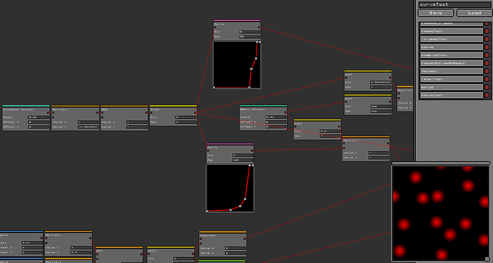
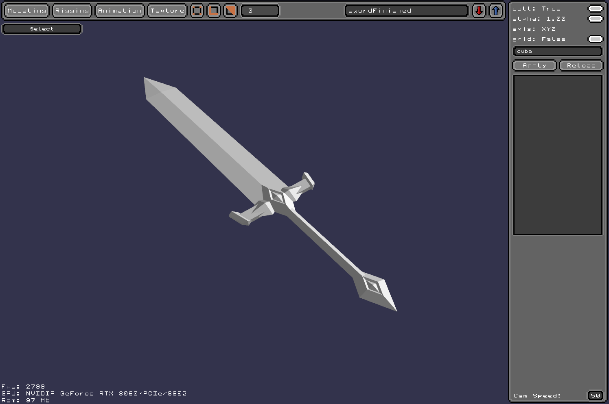
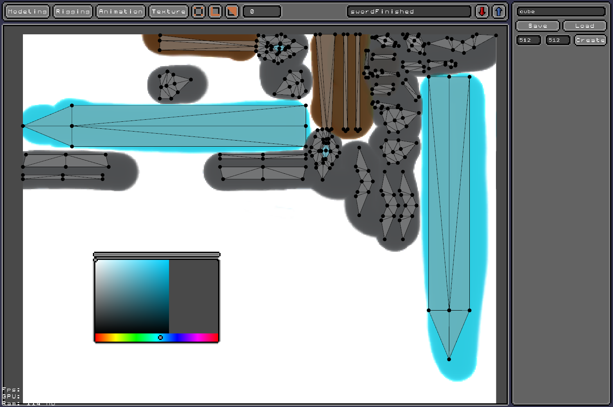
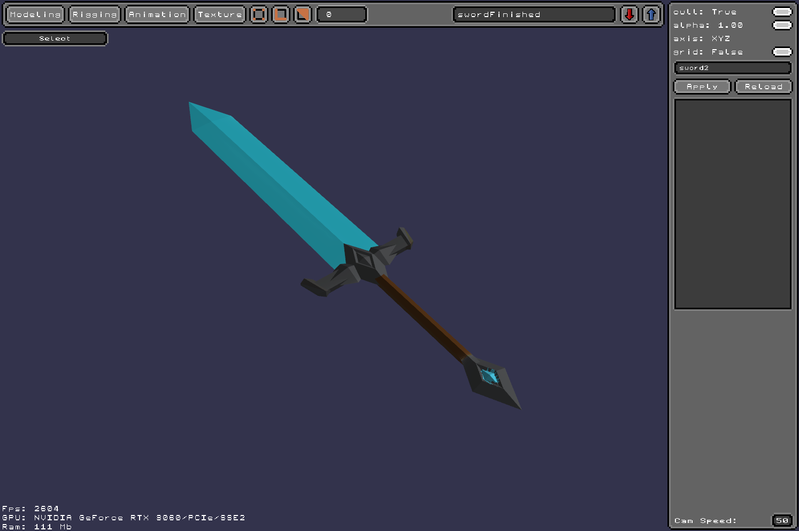

Projet unity (interrompu)
Petite présentation du projet (en anglais, Novembre 2024)
Ce projet a débuté au début du mois de septembre 2024, et j'y ai travaillé dès que possible pendant environ 3 à 4 mois.
L'objectif était de développer un moteur de jeu voxel permettant aux joueurs de concevoir leur propre jeu à l'aide d'un système personnalisé basé sur des "Nodes".
Le moteur aurait inclus des éditeurs intégrés pour créer des blocs, des arbres, des terrains, des monstres, des structures, etc. L'idée était de donner aux joueurs la liberté de créer de vastes paysages, qu'il s'agisse de terrains complexes générés de manière procédurale ou de villes flottant dans le ciel. Le but était d'offrir aux joueurs la possibilité de construire et de partager leurs mondes uniques avec leurs amis, tout en encourageant la créativité et la collaboration.
Avec ce type de création de mondes, le joueur aurait pu créer et explorer son propre monde sans s'ennuyer. En cas d'ennui, il lui aurait suffi de télécharger les « WorldPacks » créés par d'autres joueurs !
Application d'orientation étudiant
Cette application a été réalisée sur une période de 3 à 4 mois dans le cadre d'un projet universitaire.
L'objectif était de développer une application d'orientation pour les étudiants, visant à faciliter la consultation et la gestion des dossiers académiques.
Le site propose plusieurs fonctionnalités, notamment une base de données qui stocke les informations de tous les étudiants. Il permet une navigation selon trois profils : étudiant, responsable de poursuite d'études (RPE) et école.
Les responsables de poursuite d'études (RPE) sont chargés de gérer les notes des étudiants, d'émettre un avis sur leur dossier et de les partager avec les écoles partenaires. Ils jouent un rôle clé dans le suivi académique et l'orientation des étudiants.
En tant qu'étudiant, il est possible de consulter ses propres notes et de partager son dossier avec les écoles inscrites sur la plateforme. Cela facilite les candidatures et améliore la visibilité auprès des établissements.
Les écoles, quant à elles, ont la possibilité de consulter les dossiers et les avis des étudiants qui leur ont partagé leurs informations. Cela leur permet d'évaluer les candidatures et de sélectionner les profils correspondant à leurs critères.

Projet moteur de jeu (en cours)

Le projet de moteur de jeu a débuté après que j'ai arrêté de travailler sérieusement sur le projet Unity. Pourquoi ? Parce que je trouvais que je m'appuyais trop sur un moteur de jeu déjà existant, et je voulais étendre mes horizons en créant mon propre moteur de jeu, avec succès !
Tout d'abord, il faut savoir que le but de ce projet n'est pas de recréer un tout nouveau jeu, mais de transférer mon projet Unity vers un projet avec mon propre moteur de jeu.
Ce processus a requis énormément de connaissances dans le domaine de la 3D et des shaders, utilisés pour afficher des objets à l'écran. Il m'a donc fallu apprendre à utiliser le .NET Framework ainsi que le package OpenTK, qui est une version d'OpenGL écrite en C# au lieu de C++, et qui est responsable de l'affichage.
Avancées
Actuellement, le 25 avril 2025, et après 5 mois et demi de travail, le projet compte entre 25,000 et 30,000 lignes de code et a acquis une quantité impressionnante de fonctionnalités, telles que :
- Un système de UI permettant d'afficher des informations à l'écran. Il prend en charge le texte et les images, ainsi que des modules appelés "collections" et des paramètres d'alignement, permettant de positionner l'UI comme souhaité sans avoir à placer chaque élément individuellement.
- Un système de génération de terrain voxel, similaire à celui montré sur l'image ci-dessus. Ce système est accompagné d'une fenêtre permettant de personnaliser la génération du terrain via un système de "node", qui utilise le UI mentionné précédemment. Un outil de création de formes géométriques est prévu, permettant aux joueurs de créer leur propre monde ainsi que des structures, comme des maisons et des végétaux.
- Un script de joueur permettant de parcourir le monde, ainsi que de placer ou casser des blocs. Un système d'inventaire basique est en cours de développement. Un outil pour la création de capacités (courir, sauter, attaquer) est aussi planifié, offrant aux joueurs la possibilité de créer des capacités uniques.
- Un système de modélisation 3D permettant de créer des objets, ainsi qu'un système d'animation pour animer ces objets créés avec le modeleur 3D (en cours de développement). Il y a aussi une fenêtre pour créer des textures et les appliquer directement sur le modèle 3D, accompagnée d'un système d'édition UV pour aligner les textures comme on le souhaite.
Je tiens à préciser que, mis à part la base d'OpenTK pour afficher les modèles 3D, tout le reste a été codé par mes soins, sans l'utilisation de bibliothèques externes pour me faciliter la tâche. Pour le UI, il m'a fallu de nombreuses semaines sans répit pour apprendre les shaders, l'affichage sous diverses formes, la gestion des textures, afin de parvenir à un système presque optimisé.
Pour le modélisateur, je me suis inspiré de Blender, un outil très utilisé dans l'industrie. Plutôt que de créer un simple système d'importation, j'ai choisi de tout créer moi-même. Ce n'était peut-être pas la solution idéale, mais cela m'a permis d'apprendre énormément sur le code.
Encore une fois, le but de ce projet n'était pas uniquement de créer un jeu le plus facilement possible, mais aussi d'apprendre les bases de la programmation graphique. Cela me permettra de créer un moteur de jeu dans le futur, pour développer le jeu que je souhaite. C'est pourquoi je n'ai jamais eu l'envie d'utiliser d'autres bibliothèques, comme imGUI par exemple, pour me faciliter la tâche, bien qu'elles existent.
Captures d'écran du projet (cliquez pour agrandir)
Système de node

Génération de monde basé sur les paramètres des nodes

Exemple de modèle 3D créé avec mon logiciel

Création de texture et application sur le modèle

